등급 작물
수확할 때 보너스로 등급 작물이 나와요. 레벨이 올라도 확률은 조금씩만 올라요. 등급 작물로 요리하면 요리에도 별이 붙어요.
| 등급 | Lv.1 | Lv.50 | 판매가 |
|---|---|---|---|
| ★ 은 | 10% | 14% | x1.5 |
| ★★ 금 | 4% | 6% | x2 |
| ★★★ 이리듐 | 1% | 2% | x3 |
블랙하임은 농사짓고, 요리하고, 캐고, 낚는 친구들끼리의 마인크래프트 농장 서버예요.
blackheim.kro.kr
Java 26.2 버전으로 접속하세요
최근 패치노트예요 (디스코드 업데이트 채널과 같은 글). 눌러서 펼쳐 보세요.
🐟 물고기 연못 (새 기능)
🫙 어란 숙성통 (새 기계)
🔊 효과음 설정 /소리
🔧 고친 것
⛏️ 광산이 바뀌었어요 (수정 동굴)
· 광산 보물은 이제 떠돌이 수정에서만 나와요 (1시간에 나오는 보물 수는 예전과 같아요) · 그 광맥을 캔 사람만 잡을 수 있어요
💎 캐시 (서버 후원)
🎫 이용권 (기능마다 따로 · 30일 또는 영구) — /이용권 으로 내 것 보기
⏱️ 쿠폰 (접속해 있는 동안만 시간이 줄어요)
📜 권
🔧 같이 바뀐 것
처음 접속하면 지원금 25만원과 파스닙·당근 씨앗, 구리 물뿌리개, 요리 테이블, 그리고 Black 곡괭이·도끼·삽·괭이·칼·낚싯대를 받아요. Black 도구와 물뿌리개는 버릴 수 없고 /창고(가상 창고)에만 넣을 수 있어요 (상자 · 통 등에는 안 들어가요), 상점에서도 안 팔아요 — 잃어버릴 걱정 없이 강화해서 쓰면 돼요. 레벨 5가 되면 /직업 을 하나 골라 보세요 (처음은 무료).
처음 들어오면 튜토리얼(5~10분)이 먼저 시작돼요 — 작은 섬에서 괭이로 흙 갈기 → 씨앗 심기 → 물 주기 → 수확 → 판매 → Shift + F 메뉴 → 상점까지 직접 해 보고, 이어서 내 팜 · 돈 · 광산 · 낚시 · 벌목 · 요리 · 레벨/직업/부탁 · 매일 할 것 안내를 채팅 [다음 ▶] 으로 넘겨 읽어요. 마지막에 서버 규칙에 동의하면 보상을 받고 스폰으로 가요. 농사 단계에서 막히면 30초 뒤 /튜토리얼 다음. 다시 해 보고 싶으면 언제든 /튜토리얼 (그만두기 /튜토리얼 나가기, 보상은 처음 한 번만).
/메뉴 또는 Shift + F. 상점·판매·강화·도감 등 모든 기능을 한 화면에서 클릭으로! Black 은 PvP · 낙하 · 배고픔 등 피해가 전혀 없는 평화로운 서버예요. 바닐라 발전과제 알림도 없어요.
/농장 으로 나만의 섬을 만들어요. 빨간 지붕 집 · 울타리 밭 · 연못과 선착장 · 꽃 정원이 있는 기본팜에서 시작해요. 밭에는 흙밭 64칸이 처음부터 깔려 있고, 괭이로 흙 · 잔디를 갈면 얼마든지 넓힐 수 있어요. /팜멤버 로 친구를 초대해 같이 지을 수 있어요.
괭이로 간 흙밭에 씨앗을 심고 물뿌리개로 물을 줘요. 물이 없으면 연한 흙, 물을 주면 진한 흙이 돼요. 준 물은 수확할 때까지 마르지 않고, 밟아도 흙으로 돌아가지 않아요.
다 자란 작물(위에 노란 ! 표시)을 괭이로 우클릭 또는 좌클릭(꾹)해서 수확해요 (작물은 괭이로만 캘 수 있어요). 덜 자란 작물을 괭이로 좌클릭하면 없어지고 씨앗이 돌아와요. 작물이 심어진 밭은 부술 수 없고, 물로 쓸어 수확할 수도 없어요. 괭이를 강화하면 작물 2배 확률이 올라가고, +3 부터는 여러 칸을 한꺼번에 수확해요. 운이 좋으면 ★ 등급 작물.
남는 씨앗은 출하함(/판매)에 넣으면 상점 가격의 절반에 팔려요. 작물을 손에 들고 /씨앗만들기 하면 씨앗으로 바꿔요 — 보통 작물은 1개 → 씨앗 1개, 씨앗이 비싼 재성장 작물은 몇 개 → 1개 (바꿔서 파는 것보다 작물을 그냥 파는 게 항상 이득).
/판매 출하함에 넣고 닫으면 끝. 넣는 동안 제목 옆에 받을 돈이 바로 보여요. 요리하거나 가공 기계(술통·절임병·목장 가공기·제분기·수액 채취기)로 만들면 더 비싸게 팔 수 있어요. 주민 /부탁 을 들어주면 1.6배!
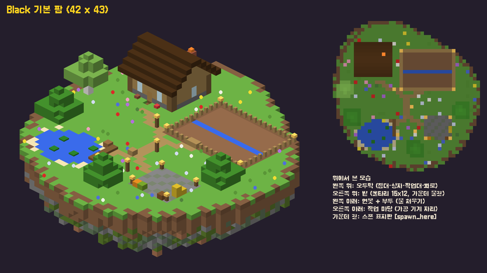
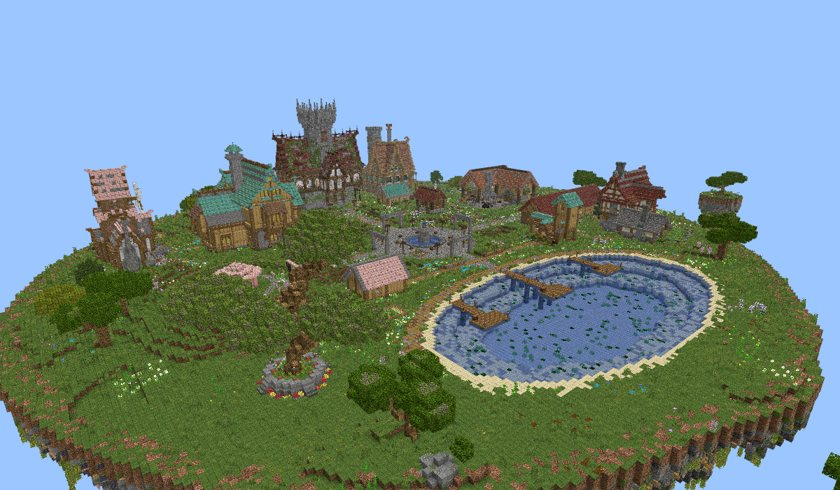
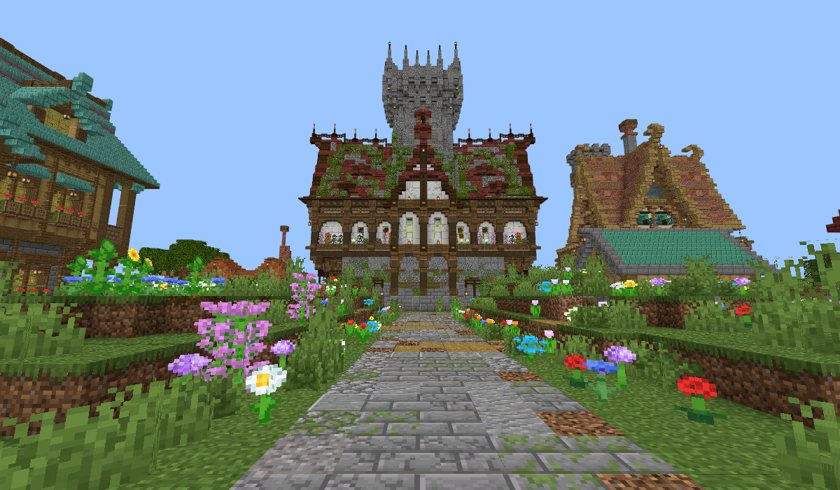
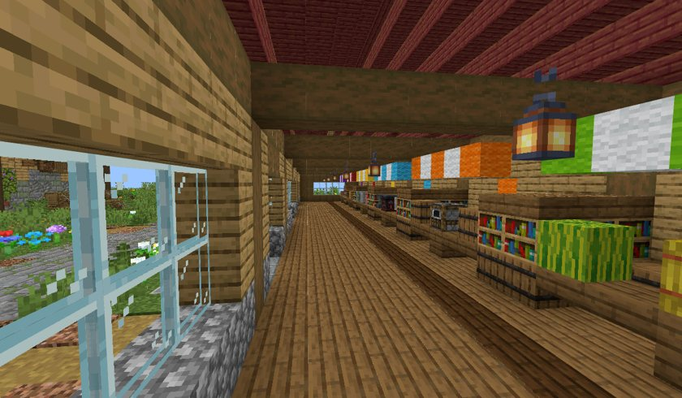
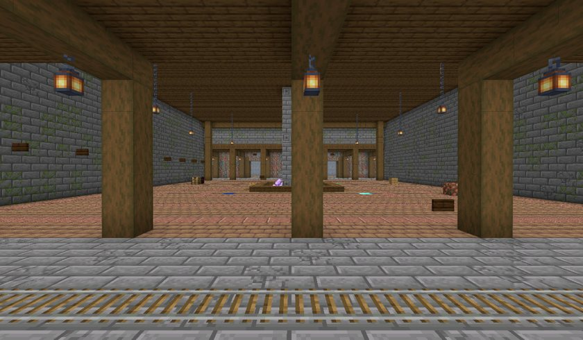
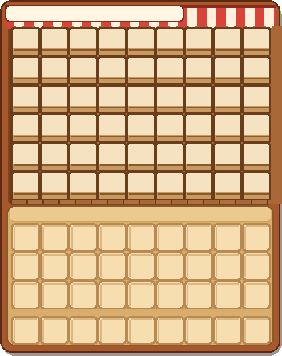
접속할 때 뜨는 리소스팩을 받아야 작물·요리·광물 텍스처와 그림 GUI가 보여요. 거절하면 아이템이 종이처럼 보여요.
한/영 전환을 깜빡해도 괜찮아요. /tkdwja 처럼 영어로 쳐도 /상점 이 돼요.
스타듀밸리 작물 44종. 계절 없이 언제든 심을 수 있고, 농사 레벨이 오르면 새 작물이 열려요. 팜에 아무도 없어도, 서버가 잠깐 꺼져 있어도 작물은 자라요 (다시 와 보면 지나간 시간만큼 자라 있어요 · 최대 12시간치). 대부분 약 18분이면 다 자라고, 높은 레벨의 비싼 작물 몇 개(요정 장미 · 적양배추 1시간, 대황 · 스타후르츠 1.5시간, 달콤한 보석 열매 2시간)는 오래 걸리는 대신 그만큼 비싸요 — 나가기 전이나 광산·낚시 가기 전에 심어 두세요!
/팜정보 에서 봐요./판매제한, 직접 얻은 광물 · 물고기 · 나무 · 고기 · 보물을 팔면 판 만큼 더 빨리 회복돼요. 판매 기록은 팜원이 함께 써요.수확할 때 보너스로 등급 작물이 나와요. 레벨이 올라도 확률은 조금씩만 올라요. 등급 작물로 요리하면 요리에도 별이 붙어요.
| 등급 | Lv.1 | Lv.50 | 판매가 |
|---|---|---|---|
| ★ 은 | 10% | 14% | x1.5 |
| ★★ 금 | 4% | 6% | x2 |
| ★★★ 이리듐 | 1% | 2% | x3 |
농사 Lv.15 수확물 바로 줍기 · Lv.25 자동 다시 심기가 열려요. 농부 직업이면 특성(Lv.50 = 전부 만렙) — 풍작(작물 +1) · 황금 손(★ 확률) · 씨앗 받기 · 단골 손님(판매가) 등을 골라 찍어요.
모든 스킬의 특성 표는 성장에서, 게임에서는 /특성.
시세 변동 없이 항상 같은 가격이에요 (/시세 에서 작물 · 요리 · 광물 가격표 확인). 다만 농사 · 요리(작물 · 요리 · 와인 · 잼 · 피클 · 밀가루 · 설탕 · 식용유 · 식초)는 내가 짧은 시간에 아주 많이 팔면 그 값이 내려가요. 계산은 간단해요 — 판 돈이 기록으로 쌓이고(10분마다 20%씩 줄어요), 값 = 기준 ÷ 기록 (기록이 기준 이하면 100% · 기준의 2배가 쌓이면 반값 · 최저 10%). 기준은 농사 · 요리 레벨 중 높은 쪽으로 정해져요 : Lv.1 105만 → Lv.10 308만 → 레벨마다 +2.3만 → Lv.25 약 343만 → 레벨마다 +29만 → Lv.50 약 1,069만. 그래서 1시간에 벌 수 있는 최대는 기준 × 1.34 — Lv.10 약 412만 · Lv.25 약 459만 · Lv.40 약 1,043만 · Lv.50 약 1,431만이에요 (나눠 팔든 몰아 팔든 같아요). 요리 · 와인 · 주스 · 잼 · 피클도 작물처럼 판 값 그대로 기록에 쌓여요 (요리하면 적은 작물로 같은 돈을 벌 수 있어요). 판매 기록과 기준은 팜원이 함께 써요 — 팜원이 판 것도 같이 쌓이고, 기준은 팜원 중 농사 · 요리 레벨이 가장 높은 사람을 따라가요 (같은 팜이면 모두 같은 %). 다른 팜과는 상관없어요. 값이 내려가 있으면 팔 때 몇 분 뒤 제 값으로 돌아오는지 알려 주고, /판매제한 으로 언제든 볼 수 있어요. 다른 직업 아이템(광물 · 물고기 · 나무 · 고기 · 보물)을 팔면 판 금액만큼 기록이 줄어서 더 빨리 회복돼요 — 단, 내가 직접 캐고 · 낚고 · 베고 · 잡은 것만 쳐요 (정동석을 대장간에서 깨서 나온 광물도 포함 · 받은 것 · 유저상점에서 산 것은 안 되고, 얻은 지 오래되면 조금씩 줄어요). 물고기 · 광물 · 나무 · 고기 · 보물은 제한 없이 항상 같은 값이에요.
최종 판매가 = 기본가 × 등급 × (1 + 농사레벨 × 1%)
| 등급 | 물 담는 양 | 충전 최대 범위 | 필요 농사 Lv | 업그레이드 |
|---|---|---|---|---|
| 구리 | 25 | 3×3 | 1 | 기본 지급 |
| 철 | 100 | 5×5 | 5 | 10만원 |
| 금 | 200 | 7×7 | 15 | 40만원 |
| 다이아 | 500 | 11×11 | 25 | 100만원 |
| 이리듐 | 무한 | 15×15 | 35 | 300만원 |
물뿌리개를 들고 강화 장인에게 가면 한 단계씩 올라가요 (항상 성공, 강화석 필요 없음). 물뿌리개는 처음에 받는 구리 하나로 시작해요 (상점에서는 안 팔아요). 구리부터 물뿌리개를 오른손에 들고 Shift + 우클릭을 꾹 누르면 충전되고 (왼손에 들면 충전 없이 그냥 물 주기), 충전하는 동안 물 줄 범위가 파란 테두리로 보여요. 떼면 바라보는 곳에 넓게 물을 줘요 (Shift 를 누르고 있는 동안은 물이 안 나가요). 물이 떨어지면 물을 우클릭해서 채워요 — 한 번에 구리 2 · 철 5 · 금 10 · 다이아 25씩, 이리듐은 늘 가득.
| 종류 | 범위 | 물 주는 칸 | 필요 농사 Lv | 가격 |
|---|---|---|---|---|
| 스프링클러 | 3×3 | 주변 8개 | 10 | 15만원 |
| 고급 스프링클러 | 5×5 | 주변 24개 | 25 | 50만원 |
| 이리듐 스프링클러 | 7×7 | 주변 48개 | 40 | 100만원 |
밭 사이에 설치하면 자기 칸을 뺀 네모 범위의 흙밭 · 화분에 약 3분(200초)마다 한 번씩 물을 줘요. 밭 물은 수확할 때만 마르니까, 수확하고 나면 늦어도 3분 안에 다시 젖어요. 물뿌리개로 직접 주면 바로 젖어요. 예전 화분도 그대로 쓸 수 있어요 (삽 · 괭이 · 곡괭이로 때리면 바로 캐져요).
필요 경험치 = 200 × 레벨2.3 · 최대 Lv.50 · 농사·광부·낚시·요리·벌목 공통 (11/10 : 경험치 통 x2 · 얻는 경험치도 x2 — 레벨업 속도는 그대로). 처음엔 빨리 크고(Lv.14 까지 초보 보너스) 뒤로 갈수록 오래 걸려요 — 직업마다 한 번에 얻는 경험치 배율이 달라서, 그 활동만 했을 때 Lv.50 까지 광산 · 낚시 · 요리 · 벌목은 비슷하게, 농사는 약 1.5배 오래 걸려요 (농사가 주 컨텐츠).
작물 + 물고기 + 식재료로 요리 50종. 작물마다 그 작물만의 요리가 하나씩 있어요 (작물 44종 = 작물 요리 44개, 고기·생선 요리 6개). 팜에 설치한 요리 테이블을 우클릭하면 요리 화면이 열려요 (처음 접속하면 1개 지급, 상점 도구에서 추가 구매). 요리 값 = 작물 · 물고기 재료 값 × 2.5 + 그 밖의 재료(고기 · 우유 · 달걀 · 치즈 · 버터) 값 × 4 (100원 단위, 밀가루 · 설탕 · 식용유 · 식초는 작물 재료로 침 · 물고기는 어떤 물고기를 넣어도 같은 값으로 계산)라 재료로 파는 것보다 훨씬 이득이에요. ★ 등급 재료로 만들면 요리에도 별이 붙고, 아이템 그림에도 별 테두리가 생겨요.
식재료는 상점에서 팔지 않아요 — 직접 구하거나 만들어요.
/도축장밀가루 · 설탕 · 식용유 · 식초 · 치즈 · 버터는 팔 수도 있어요 (아래 가치 그대로). 달걀 · 우유는 가치의 절반, 고기(소 · 돼지 · 닭 · 양)는 가치의 80%에 팔 수 있어요 (상점에서 사는 값보다는 항상 싸요).
/도축장 은 동물을 잡는 따로 된 월드예요. 동물이 계속 다시 나타나고, 잡으면 요리 재료가 나와요. 칼로만 잡을 수 있어요 (다른 도구로는 데미지가 안 들어가요). Black 칼을 강화할수록 빨리 잡고 고기도 많이 나와요 — 강화 단계마다 정해진 데미지 (크리티컬 = 점프하면서 때리기 x1.5) : +0 크리티컬 4방 · +5 크리티컬 3방 + 그냥 1방 · +7 크리티컬 3방 · +10 크리티컬 2방, 고기는 단계마다 +35% (+10 = 4.5배). 공격 게이지가 덜 찬 채로 마구 때리면 약하게 들어가요. 팜(섬)에서 잡으면 아무것도 안 나와요. 동물 번식은 막혀 있어요. 동물은 8초마다 우리마다 두 마리씩 다시 나타나요 (우리당 최대 16마리). 체력은 모두 60 으로 같아요. 잡을 때 2.5% + 칼 강화 단계마다 0.2% 확률로 도축 보물 14가지 중 하나가 나와요 (아래 보물 값표).
/광산 으로 가면 수정 동굴이에요. 방 5개가 이어져 있고 안쪽으로 갈수록 좋은 광석 — ① 입구 석탄 · 구리 · 철 → ② 레드스톤 · 청금석 · 석영 · 금 → ③ 지하 호수 에메랄드 · 다이아 → ④ 화산암 이리듐 · 파이어 오팔 · 흑금 → ⑤ 자수정 정동 별빛 수정 · 공허 결정. 블록을 캐는 대신 수정 광맥을 Black 곡괭이로 때려요 (마우스를 꾹 누르고 있어도 돼요) — 체력을 다 깎으면 광물이 가방으로 들어오고 6초 뒤 다시 생겨요. 광부 레벨이 안 되는 광맥은 못 캐요.
| 광맥 | 방 | 해금 | 체력 | 덩어리 (1덩어리에 나오는 광물) | 덩어리 경험치 | 광물 값 |
|---|
광산 벌이는 낚시와 벌목 사이로 맞췄어요 — 다 키우면(곡괭이 +10 · 특성 다) 쉬지 않고 1시간 약 1,560만원.
광맥을 다 캤을 때 가끔 떠돌이 수정이 튀어나와 30초 동안 주변을 떠다녀요. 곡괭이로 때려서 잡으면 광산 보물 2 ~ 5개(곡괭이 강화가 높을수록 많이)와 가끔 마일리지! 그 광맥을 캔 사람만 잡을 수 있어요. 많이 캘수록 · 큰 광맥일수록 잘 나오고, 특성 보물 감각(최대 x1.5) · 곡괭이 +3(x1.5)으로 확률이 올라요. 7만원 넘는 보물은 서버 전체에 공지가 떠요.
채굴하다 가끔 나와요. 스폰의 대장간(/대장간)에서 정동석을 들고 대장간을 우클릭해야만 깨져요 (Shift + 우클릭 = 전부). 어디서나 대장간 이용권이 있으면 /정동석 으로 어디서나 깰 수 있어요. 광물이나 보석이 나와요.
스타듀밸리 물고기 34종 · 스폰에서만 낚을 수 있어요. 시간 제한은 없고, 날씨에 따라 나오는 물고기가 달라요. 비가 오기 시작하면 서버 전체에 알림이 떠요 — 희귀 물고기를 노릴 때! (비는 스폰에만 와요, 다른 곳은 늘 맑음) ★ 물고기는 그림에도 별 테두리가 생겨요.
낚시 레벨 10마다 초록 막대가 커져요 (Lv.1 26% → Lv.40 46%).
보물은 직업마다 14가지, 같은 단계면 어느 직업이든 같은 값이에요. 값은 종류마다 고정이라 같은 보물끼리 겹쳐지고, 판매함에 팔 수 있어요. 직업 레벨이 오를수록 비싼 보물이 열리고 (도축은 칼 강화), 비쌀수록 드물어요. 7만원 넘는 보물은 서버 전체에 알려 줘요.
| 단계 | 가치 | 확률* | 열리는 때 | 광산 | 낚시 | 숲(새둥지) | 도축 |
|---|---|---|---|---|---|---|---|
| 흔한 보물 | 2,100원 | 19.7% | Lv.1 · 칼 +0 | 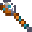 녹슨 숟가락 | 바다 유리 | 은빛 솔방울 | 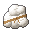 부드러운 양털 |
| 흔한 보물 | 2,800원 | 19.7% | Lv.1 · 칼 +0 | 낡은 동전 | 소라 껍데기 | 네잎클로버 | 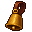 소 방울 |
| 흔한 보물 | 4,200원 | 13.1% | Lv.5 · 칼 +1 | 드워프의 두루마리 | 불가사리 | 황금 도토리 | 황금 깃털 |
| 고급 보물 | 5,600원 | 10.5% | Lv.8 · 칼 +2 | 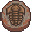 삼엽충 화석 | 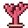 산호 조각 | 비단벌레 껍질 | 낡은 말굽 |
| 고급 보물 | 7,000원 | 9.2% | Lv.10 · 칼 +3 | 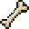 고대 뼈 | 녹슨 닻 | 무늬 새알 | 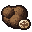 송로버섯 |
| 고급 보물 | 10,500원 | 7.2% | Lv.12 · 칼 +3 | 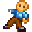 고대 인형 | 병 속의 편지 | 이끼 낀 동전 | 질 좋은 가죽 |
| 희귀 보물 | 14,000원 | 5.9% | Lv.15 · 칼 +4 | 드워프 기계장치 | 진주 | 요정의 가루 | 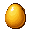 황금 달걀 |
| 희귀 보물 | 17,500원 | 5.3% | Lv.18 · 칼 +4 | 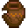 깨진 항아리 | 암모나이트 화석 | 이끼 낀 나침반 | 품평회 리본 |
| 희귀 보물 | 28,000원 | 3.3% | Lv.22 · 칼 +5 | 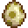 공룡알 | 해적 금화 | 은 나뭇잎 브로치 | 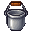 은 우유통 |
| 영웅 보물 | 42,000원 | 2.3% | Lv.26 · 칼 +6 | 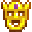 황금 가면 | 인어의 비늘 | 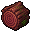 고목의 심재 | 목장 열쇠 |
| 영웅 보물 | 56,000원 | 1.6% | Lv.30 · 칼 +7 | 엘프의 장신구 | 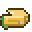 가라앉은 금괴 | 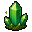 숲의 수정 | 황금 말굽 |
| 영웅 보물 | 70,000원 | 1.2% | Lv.35 · 칼 +8 | 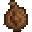 고대 씨앗 | 심해 수정 | 엘프의 화살촉 | 품평회 트로피 |
| 전설 보물 | 105,000원 | 0.7% | Lv.40 · 칼 +9 | 별의 파편 | 바다의 왕관 | 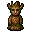 나무 정령상 | 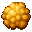 황금 양털 |
| 전설 보물 | 210,000원 | 0.3% | Lv.45 · 칼 +10 | 고대 보물 상자 | 무지개 조개 | 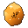 호박석 | 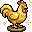 황금 닭 조각상 |
* 다 열렸을 때 (Lv.45 · 칼 +10). 1시간에 나오는 보물 수는 직업끼리 비슷하게 맞췄어요 (다 키우면 약 90개).
7만원 넘는 보물을 건지면 서버 전체에 공지가 떠요. 보물 상자가 나올 확률은 특성 · 낚싯대 +6 능력으로 올라가요.
낚싯대는 /강화 할수록 모양이 화려해지고 미끼가 붙어요. 강화할 때마다 입질이 빨라져요 (+0 3~22초 → +10 1~10초).
매일 21:00:00 ~ 21:15:00 (15분, 서버 시계 기준) 동안 가장 큰 물고기를 낚은 사람이 우승!
1등 150만원 · 2등 75만원 · 3등 35만원
같은 자리·같은 시야로 계속 낚으면 잠수 낚시로 보고 보상이 없어요. 잠수는 /잠수터 로! (잠수터 안에서는 낚시를 할 수 없어요)
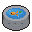
물고기 연못 · 어란상점(도구)의 물고기 연못(20만원 · 낚시 Lv.5)을 팜에 놓고, 낚은 물고기를 들고 우클릭하면 연못에 들어가요 (Shift + 우클릭 = 가방의 같은 물고기 전부). 같은 물고기 10마리까지 넣어 두면 접속하지 않아도 시간이 지나면서 어란이 쌓여요. 빈손으로 우클릭하면 어란을 받고, Shift + 우클릭하면 화면이 열려요 (물고기 넣고 꺼내기 · 쌓인 양 · 다음 어란까지 시간).
/팜정보).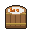
어란 숙성통(30만원 · 낚시 Lv.10)에 어란을 넣으면 숙성 어란 (값 x1.4). 다른 가공 기계처럼 시간이 걸리고, 꺼낼 때 가끔 낚시 강화석.| 물고기 (예) | 넣을 수 있는 낚시 Lv | 어란 1개 | 숙성 어란 | 10마리 연못 · 1시간 (어란 5개) |
|---|---|---|---|---|
| 잉어 | Lv.1 | 400원 | 560원 | 2,000원 |
| 틸라피아 | Lv.5 | 980원 | 1,370원 | 4,900원 |
| 강꼬치고기 | Lv.10 | 1,700원 | 2,380원 | 8,500원 |
| 참치 | Lv.18 | 2,850원 | 3,990원 | 14,250원 |
| 철갑상어 | Lv.25 | 3,860원 | 5,400원 | 19,300원 |
| 문어 | Lv.28 | 4,290원 | 6,010원 | 21,450원 |
| 전설의 대어 | Lv.45 | 6,740원 | 9,440원 | 33,700원 |
/숲 으로 가는 벌목 전용 숲에 나무 11종이 부채꼴로 자라 있어요. Black 도끼로 나무를 클릭하면 타이밍 게임이 시작돼요. 벤 나무는 그루터기가 됐다가 잠시 뒤 다시 자라요. 숲에서는 블록을 부수거나 놓을 수 없고, 팜이나 다른 곳 나무(바닐라 통나무)는 팔 수 없어요 — 숲의 Black 통나무만 팔려요.
높은 나무일수록 구간이 좁고 바늘이 빨라요. 한 번 맞힐 때마다 바늘이 더 빨라져요. 도끼 강화 3단계마다 구간이 한 칸 넓어지고, 강화 단계마다 7% 확률로 통나무 2배. +10 이면 두 번만 찍어도 나무가 넘어가요.
상점(도구)에서 사서 팜에 설치 (수액 채취기끼리 개수 제한, 벌목 Lv.5). 통나무를 가방에 넣고 우클릭 → 나무마다 다른 수액 11가지 (참나무 송진 · 자작나무 수액 · 가문비나무 타르 · 벚꽃 시럽 · 정글 고무 수액 · 아카시아 꿀 · 짙은 참나무 진액 · 맹그로브 수액 · 창백한 수액 · 진홍 수액 · 뒤틀린 수액) — 값은 통나무 값 x1.35 ~ x1.45 (높은 나무일수록). 특성 송진 장인으로 시간 -30%까지.
/가구벤 통나무와 돈으로 가구 24가지를 만들어 팜을 꾸며요 — 의자 · 소파 · 벤치(앉기), 램프 · 버섯 램프(빛), 책장 · 옷장 · 서랍장 · 식탁 · 화분 · 러그 · 단단한 나무 왕좌 등. 팜에 우클릭으로 놓고, 부수면 가구 아이템으로 돌아와요.
| 나무 | 벌목 Lv | 통나무 1개 | 경험치 | 다시 자람 | 수액 채취기 |
|---|
상점 건물의 도구 상인(/상점 으로 이동)에게서 기계를 사서 팜에 설치하고 우클릭하면 만들 것 고르기 화면이 열려요. 가방에 있는 재료로 만들 수 있는 것만 보여요 (★ 등급 재료는 따로). 하나를 누르고 개수(1 · 4 · 8 · 16 · 32 · 64 · 최대)를 고르면 재료가 가방에서 빠지고 바로 시작! 기계 위에 남은 시간이 뜨고, 다 되면 우클릭으로 한꺼번에 받아요.
시간은 요리와 같은 기준 — 1개당 남는 돈에 비례(1초에 28원꼴, 1개 10초 ~ 1분) × 개수. 팜마다 개수 제한이 있고 팜원 중 가장 높은 요리 레벨로 늘어나요 (팜장 + 팀원 중 가장 높은 사람 기준) — 가공 기계는 종류마다 5개 → 최대 12개 (술통 5개 · 절임병 5개 … 따로), 요리 테이블 1개 → 최대 6개 (특성). 지금 몇 개 놓여 있고 몇 개까지 놓을 수 있는지는 /팜정보 에서 봐요.
| 기계 | 넣는 것 | 나오는 것 | 시간 | 값 |
|---|
작물의 ★ 등급은 가공품에도 그대로 (값도 등급 배율). 꽃은 가공할 수 없어요. 기계를 부수면 기계와 넣어둔 것을 돌려받아요. 기계는 그 팜의 팜원 · 신뢰 받은 사람만 쓸 수 있어요.
낚시 쪽 기계 — 물고기 연못(어란이 쌓임)과 어란 숙성통(어란 → 숙성 어란 x1.4)은 낚시 칸에 있어요.
인챈트 테이블 · 모루 · 대장장이 작업대는 쓸 수 없어요. 대신 Black 도구를 스폰의 강화 장인(/강화소)에게 가져가 강화해요. 도구를 들고 장인을 우클릭! Black 도구는 절대 부서지지 않아요.
| 단계 | 필요 등급 | 성공 | 비용 | 강화석 | 실패하면 | 2배 확률 |
|---|
등급마다 강화 한도가 있어요 — 1등급 +2, 그 뒤 2등급마다 +1 (16등급부터 +10). 강화할 때마다 모습이 바뀌어요 — 나무 → 돌 → 구리 → 철 → 금 → 이리듐 → 다이아 → 옥 → 루비 → 네더라이트 → +10 전설 (모든 Black 도구 · 낚싯대 똑같이).
+3 은 손이 편해지고, +6 은 좋은 게 더 잘 나오고, +10 은 확 달라져요. 도구 설명(로어)에 ✔ 로 표시돼요.
| 도구 | +3 | +6 | +10 |
|---|---|---|---|
| 괭이 | 바라보는 쪽 한 줄 3칸 같이 수확 | ★ 등급 작물 확률 1.5배 | 3×3 한꺼번에 수확 |
| 곡괭이 | 떠돌이 수정(광산 보물) 확률 1.5배 | 크리티컬 10% (피해 2배) | 크리티컬 20% (피해 2배) |
| 도끼 | 벌목 초록 구간 넓게 | 단단한 나무 · 새둥지 · 버섯 1.5배 | 두 번 찍으면 나무가 넘어감 |
| 낚싯대 | 초록 막대 한 단계 크게 (레벨 10 오른 만큼) | 보물 상자 확률 1.5배 | 게이지가 절반부터 시작 |
| 칼 | 휩쓸기 (주변 동물도 같이) | 고기 +1 (확정) | 크리티컬 두 방에 잡기 |
+10 도 노력하면 닿을 수 있게 확률을 바꿨어요 — 마지막 +10 은 성공 15%, 파괴는 +7 부터 (3 · 5 · 7 · 10%). 평균으로 +6 약 1,800만원 · +8 약 1억 · +10 약 10억어치(돈 + 강화석).
모든 강화석은 한 번 할 때마다 정해진 확률로 나와요. 도구 +10 · 특성 "강화석 수집가" 3단계까지 키운 사람이 부지런히 1시간 하면 어느 직업이든 약 30개 (특성이 없으면 약 20개)가 되게 맞췄어요.
Black 삽은 아무 강화석이나 섞어서 써도 돼요. 특성 강화석 수집가로 1.5배까지. 강화할 때 돈 + 강화석이 들고, 실패해도 써요. /잠수상점 에서도 살 수 있어요.
강화 효과는 모든 도구가 똑같아요 — 1단계마다 7% 확률로 2배 (+10 이면 평균 +70%): 곡괭이 광물 · 괭이 작물 · 낚싯대 물고기 · 칼 고기 · 도끼 통나무(벌목 숲). 도끼는 3단계마다 벌목 게이지 구간도 넓어지고, 삽은 캐는 속도(효율)만. 곡괭이 채굴 속도는 +0~+4 철 급 → +5 다이아 급 → +9 네더라이트 급, 광산 안 속도는 단계마다 +2%. 칼은 강화할수록 동물을 빨리 잡고 (+0 크리티컬 4방 → +10 크리티컬 2방) 고기도 단계마다 +35% 더 나와요.
강화가 파괴되면 도구가 사라지지 않고 +0 으로 돌아가요 (Black 도구는 상점에서 안 팔아서). 파괴 방지권은 파괴를, 하락 방지권은 단계 하락을 한 번 막아줘요. 상점(파괴 500만원 · 하락 200만원)이나 잠수상점(파괴 2,250P · 하락 900P)에서 사고, 강화 GUI에서 쓸지 켜고 끌 수 있어요.
플레이어 등급은 20단계, /등급업 으로 돈을 내고 한 단계씩 올려요 (최종 등급 31억 5,000만원, 1등급부터 합계 약 95억 — 1~10등급은 합계 약 1억, 11등급부터 크게 올라요). 등급이 오르면 팜 크기가 커지고 (1~4등급 100×100 · 5~9 150×150 · 10~14 200×200 · 15~ 250×250), 강화 한도·설치 제한·홈 개수·출석 보상·버프·유저상점 등록 개수도 늘어나요. (기계 개수는 등급 대신 요리 레벨로, 나머지 혜택은 특성으로 받아요) 버프는 /등급버프 GUI에서 하나씩 켜고 끌 수 있고, 야간 투시는 누구나 /야간투시.
| 접속 시간 | 대략 이 정도 |
|---|---|
| 첫날 (~10시간) | 농사 Lv.9~10 · 광산/낚시 Lv.15 안팎 · 3~5등급 |
| ~100시간 (약 열흘) | 농사 Lv.18 · 광산/낚시 Lv.25 안팎 · 10~11등급 |
| ~400시간 (한 달 반) | 농사 Lv.32 · 광산/낚시 Lv.40 · 16등급 |
| ~700시간 (두 달 반) | 농사 Lv.42 · 18~19등급 |
| ~1,000시간 (서너 달) | 농사 Lv.50 · 20등급 (Mythic) · 도구 +10 도전 |
하루 10시간씩 하는 사람이 4~5개월쯤에 끝까지 가도록 맞췄어요. 덜 하면 그만큼 천천히 — 작물과 가공 기계는 접속하지 않아도 돌아가요.
/특성 · /직업스킬은 농사 · 광부 · 낚시 · 요리 · 벌목 5개. /직업 으로 직업을 하나 고르면 그 분야 특성 · 경험치 +15% · 판매 +5% (처음은 무료, 바꾸기는 30일에 한 번 돈 25만원 · 그 사이에는 직업 변경권). 특성은 내 직업 분야만 찍을 수 있어요 — 포인트 = 3 + 직업 레벨 × 0.3, Lv.50 = 18점이라 특성 6개 × 3단계를 전부 만렙까지 찍을 수 있어요. 직업을 바꾸면 찍은 특성은 모두 빠지고 새 직업에서 다시 찍어요. 초기화도 돈으로 할 수 있어요.
레벨로 열리는 것 : 농사 Lv.15 바로 줍기 · Lv.25 자동 다시 심기 · 요리 레벨로 요리 테이블(1→6개)과 가공 기계(3→16개) 개수.
/부탁마을 주민 5명 — 농부 봄이(작물) · 어부 바다(물고기) · 광부 단단(광물) · 요리사 소금(요리) · 목수 나무(통나무) — 이 각자 자기 분야 물건만, 내 레벨에 맞게 16 · 32 · 64개씩 부탁해요 (부탁 칸 4개). 모아서 건네주면 물건 값의 1.6배 돈 · 마일리지 2 · 호감도! 끝낸 칸은 90분 뒤 새 부탁, 마음에 안 들면 Shift 클릭으로 거절.
부탁 4번 = 하트 1개 (최대 10개). 하트 2 · 4 · 6 · 8 · 10 마다 선물 (돈 · 뽑기권 · 강화석), 10하트면 칭호 [마을의 단짝], 5명 모두 10하트면 [온 마을의 친구].
/도감 농사 · 광산 · 보물 · 요리 · 낚시 (GUI). 처음 얻으면 "띠링!" 하고 등록, 카테고리를 다 모으면 큰 보상과 칭호!
/출석 연속 출석 보상, /퀘스트 내 레벨에 맞춘 퀘스트 3개 (농사 · 광산 · 낚시 · 벌목, 보상은 치장용 마일리지), /부탁 주민 부탁 4칸, 매 정각마다 40% 확률로 핫타임(15분 · 경험치 2배, 벌목도). · /블록파티 미니게임 : 전용 월드에서 2명 이상 모이면 시작, 색깔 바닥에서 화면에 나온 색 위에 서기 → 나머지 바닥이 사라져 떨어지면 탈락, 마지막 1명 우승 (마일리지 3, 하루 3번까지) · 탈락하면 관전석, /블록파티 나가기 = 스폰으로
/정렬 내 가방 정렬 · 같은 것끼리 합치고 종류 순서로/넴주(spawn) · 영어 자판으로 /tmvhs(스폰) 처럼 쳐도 알아서 고쳐서 실행해요/칭호 업적을 달성하면 칭호가 생기고, 골라서 장착하면 채팅에 표시돼요 (처음엔 칭호 없음). 스킬 칭호는 최대 레벨(Lv.50) 에서만 — 농사 · 광부 · 낚시 · 벌목 · 요리. 도감 카테고리를 다 모아도, 주민 10하트도 칭호!
/팜멤버/유저상점/유저상점 등록 <가격> [개수] (개수를 빼면 손에 든 전부)/창고어디서나 여는 개인 보관함이에요. 창고 하나가 큰 상자 한 개(54칸)! 처음엔 1개, 등급이 4 오를 때마다 1개씩 늘어나 20등급에 6개 — 그 위로는 창고 확장권으로 최대 10개. /창고1 ~ /창고10 (또는 /창고 2) 으로 원하는 창고를 바로 열 수 있어요.
/팜랭킹팜원들이 판매로 번 돈이 팜 점수로 쌓여요. 친구들과 같이 키운 팜이 몇 위인지 TOP 10 에서 확인! 스킬 랭킹은 /농사랭킹 · /광산랭킹 · /낚시랭킹 · /벌목랭킹.
/우편아이템을 들고 /우편 보내기 <닉> — 친구가 접속 안 해 있어도 보낼 수 있어요. /우편 에서 하나씩 또는 모두 받기. 이벤트 보상도 우편으로 와요. 도구는 보낼 수 없어요.
/닉네임처음 접속하면 한글 닉네임권 1장을 받아요. 손에 들고 우클릭 → 채팅에 이름(한글 · 숫자 2~8글자) → 확인. 채팅 · TAB 목록 · 머리 위 이름이 바뀌고, /송금 홍길동 1000 · /우편 보내기 홍길동 · /tpa · /msg · 팜 초대처럼 명령어에 한글 닉을 써도 돼요. 닉을 정할 때 색 16가지도 같이 골라요 (색만 바꾸는 닉네임 색 변경권도 상점 티켓 칸). 직접 글자 · 색을 정하는 칭호권은 캐시상점(/캐시상점)에서. 다시 바꾸려면 상점 티켓 칸에서 닉네임권 구매. 부적절한 닉네임 · 칭호는 제재를 받을 수 있어요. /닉네임 누구 <닉> 으로 영어 이름 확인.
/잠수터스폰의 잠수터에 있으면 1분마다 잠수 포인트 +1 (가만히 있어도 OK). 들어가면 잠수 시작, 나가면 잠수 끝 알림이 뜨고, 잠수 중엔 화면 아래에 다음 포인트까지 남은 시간 · 스코어보드에 ● 잠수 중이 보여요. /잠수상점 에서 강화석(2개 45P · 다섯 종류) · 방지권 · 플라이 티켓 · 마일리지(10M 120P · 50M 550P)로 바꿀 수 있어요. 돈 주머니는 없어졌어요.
/공동목표월~금 동안 모두 함께 작물 · 물고기 · 광물 · 요리 같은 팔 수 있는 것을 기부함에 넣어 게이지를 채워요. 100%가 되면 그 주 주말(토 · 일) 내내 판매가 +10% · 경험치 1.5배! 기부한 사람은 기부한 가치만큼 마일리지도 받아요.
/주간랭킹이번 주에 번 돈(판매왕)과 이번 주 경험치(성장왕)로 겨뤄요. 매주 월요일 0시 정산 — 1~3위 마일리지 200 · 120 · 60, 1위는 한 주 동안 칭호 [이번 주 판매왕] · [이번 주 성장왕]. 늦게 시작한 친구도 매주 1위를 노릴 수 있어요.
/도박장슬롯머신 16대가 있는 전용 방. 기계를 우클릭하고 판돈 10만 · 50만 · 100만 중 하나를 고른 뒤 레버로 돌리고 멈춰요. 가운데 줄 그림 3개가 같으면 당첨 — 동 x1.5 · 철 x2 · 금 x3 · 에메랄드 x5 (50만 · 100만) · 다이아 x10 (100만), 2개가 같으면 본전, 나머지는 꽝. 꽝 > 본전 > 당첨 순으로 잘 나오고, 판돈이 클수록 당첨이 훨씬 덜 나와요 — 당첨 26% · 18% · 13%, 본전 22% · 18% · 13% (10만 · 50만 · 100만). 길게 하면 잃는 구조예요 (돈이 넘칠 때 재미로). 창을 닫거나 나가도 결과는 정산돼요.
/음악멜로디 없이 잔잔하게 깔리는 블랙하임 전용 배경음 4개 — 스폰 흙 위의 아침, 팜 팜의 오후, 광산 광산의 메아리, 블록 파티 블록 파티! 장소마다 저절로 바뀌고, /음악 에서 끄기 · 곡 고르기. 게임 설정의 음악 소리 크기로 조절돼요.
/소리서버가 내는 효과음을 종류마다 켜짐 · 작게 · 꺼짐 으로 바꿀 수 있어요 (나에게만 적용) — 축하 · 알림음(레벨업 · 달성), 띠링 소리(얻음 · 판매 · 구매), 거절음, 버튼 · 화면 소리, 작업 소리(채광 · 벌목 · 낚시 · 요리 · 강화). 한꺼번에 : /소리 끄기 · /소리 작게 · /소리 켜기.
마일리지로 뽑기권을 사서 /뽑기 로 뽑아요. 뽑은 치장은 /옷장 에서 입어요. 모자 · 날개 · 등/망토 · 펫 · 신발 · 오라 6종류 × 15개 — 종류마다 칸이 따로라 한꺼번에 다 착용할 수 있어요! (단, 망토와 날개는 같이 못 입어요 — 등에서 겹쳐서 하나를 입으면 다른 하나는 벗겨져요)
/퀘스트/유저상점 에서 팔거나 친구에게 선물, 필요 없으면 들고 Shift+우클릭으로 마일리지 (일반 10 · 희귀 20 · 영웅 40 · 전설 100 M) · /마일리지상점 : 뽑기권 · 도구 스킨 뽑기 · 신호기를 한 화면에서 사요 (옷장 · 상점 아래 버튼으로도 열려요)/팜정보)/마일리지상점 → 도구 스킨 뽑기에서 마일리지 300 M — 벚꽃 · 사탕 · 얼음 30% · 별빛 10% 중 하나의 스킨권이 나와요. 스킨권은 아무 Black 도구에나 1번 (들고 우클릭 → 입힐 도구 고르기, 강화 단계 그대로). /치장해제 로 원래 모습으로 되돌릴 수 있지만 스킨권은 돌아오지 않아요Black 도구(곡괭이 · 도끼 · 삽 · 괭이 · 칼 · 낚싯대)에 입히는 테마예요. 게임에서는 도구 둘레에 오라가 은은하게 숨 쉬고, 꽃잎 · 사탕 조각 · 눈송이 · 금별이 떠다녀요. 손에 들면 손 주변에도 테마 반짝이가 나와요. 강화 단계 · 능력치는 그대로.
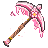
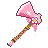
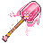
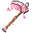
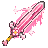
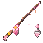
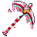
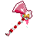
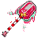
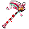
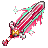
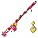
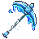
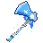
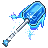
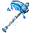
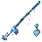
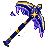
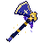
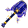
농장에서 건축할 때 편하게! 상점 건물의 도구 상인에게서 티켓을 사서 우클릭으로 충전하고 /플라이. 남은 시간은 실제로 날고 있을 때만 줄어요 (켜 두고 걷거나 서 있으면 그대로).
농장(섬)에서만 날 수 있어요. 시간이 끝나면 천천히 떨어지고 낙하 데미지는 없어요. Sovereign(14등급)부터는 무제한! (플라이 무제한 이용권도 있어요)
같은 줄 위·아래에 설치하고 위에 서서 점프 = 위층, 웅크리기 = 아래층. 최대 64칸. 위에 서 있으면 지금 몇 층인지(예: 3층 / 5층) 화면에 표시돼요.
상점에서만 살 수 있어요 (제작 불가). 부수면 다시 아이템으로 돌아와요.
/블록상점마인크래프트 블록 500가지 넘게 돈으로 사요 — 나무 · 돌 · 색깔 · 유리 · 자연 · 구리 · 조명 · 기능/장식, 분류마다 여러 쪽 (오른쪽 아래 화살표 = 다음 쪽). 색깔 블록(양털 · 콘크리트 · 테라코타 · 유리 등)은 16색 전부 같은 가격. 상점 블록으로 조합할 수 있는 것(판자 · 반블록 · 계단 · 상자 · 작업대 · 침대 · 카펫 · 깃발 · 판유리 등)은 직접 만들어 써요. 좌클릭 1개 · 우클릭 한 세트(보통 64개) · Shift 클릭 4세트. 일반 상점도 좌클릭 1개 · 우클릭 한 세트. 광석 · 광물 블록 · 금지 블록은 안 팔아요. 메뉴 → 거래에서도 열려요.
광장 동쪽 큰길 남쪽의 빨간 지붕 상점 건물 안에 상인 6명이 나란히 있어요 — 씨앗 · 가공 기계 · 도구 · 건축 블록 · 출하 · 시세. 우클릭하면 그 상점이 바로 열려요. 메뉴 → 이동에서 스폰 · 강화소 · 대장간 · 도축장 · 잠수터 · 광산으로 바로 갈 수 있어요.
서버가 버벅이지 않게 15분마다 바닥에 떨어진 아이템을 치워요. 1분 전 · 10초 전에 채팅으로 알려주고, 직전에 화면에 3 · 2 · 1 카운트다운이 떠요. 필요한 건 주워 두세요.
팜 · 광산 · 도축장은 항상 맑음. 비는 스폰에만 와요 (30분마다 가끔 소나기). 비가 오면 전체 알림 — 낚시하러 가요!
Shift + F (또는 /메뉴) 를 누르면 그림 메뉴가 열려요. 상점 · 판매 · 내 팜 · 광산 · 낚시 · 강화 · 거래 · 성장 · 기타 — 큰 그림 버튼을 누르면 바로 이동하거나 열려요. 이동 메뉴에 도박장 · 잠수터, 기타 메뉴에 쓰레기통, 정보 메뉴에 판매 통계, 랭킹 메뉴에 요리 랭킹 버튼이 있어요. 강화 · 요리 · 상점 · 시세 · 도감 · 유저상점 · 우편도 모두 채팅 대신 GUI 화면이에요. 내 인벤토리 · 제작대 · 상자 · 화로와 평소 화면의 핫바 · 하트 · 배고픔도 상점과 같은 나무 · 크림 톤이에요.
서버 운영비(호스팅)를 위해 후원을 받아요. 후원하면 관리자가 캐시를 넣어 드리고, /캐시상점 에서 이용권 · 쿠폰 · 권을 살 수 있어요. 산 것은 아이템으로 가방에 들어와요 (가득 차면 우편함) — 들고 우클릭해서 쓰고, 친구에게 주거나 유저상점에 올릴 수도 있어요.
/캐시/캐시 와 스코어보드에서 볼 수 있어요/칭호 에서 장착)내 이용권 · 쿠폰은 /이용권 에서 남은 기간과 함께 볼 수 있어요.
| 이용권 | 하는 일 | 30일 | 영구 |
|---|---|---|---|
| 즉시 판매 | /판매 손 · /판매 전체 — 가방에서 바로 팔기 (출하함 /판매 는 누구나 무료) | 3,000 | 12,000 |
| 창고 판매 | /판매 창고 2 — 창고에 든 것을 꺼내지 않고 팔기 (한 번 더 쳐야 팔려요) | 2,000 | 8,000 |
| 자동 판매 | /자동판매 화면에서 종류별로 켜고 꺼요 — 캐고 · 낚고 · 벤 것이 가방에 안 들어오고 바로 팔려요. 정동석 · 가공품은 켜야 팔리고, 작물 · 요리는 판매 제한 중에는 안 팔아요 | 5,000 | 20,000 |
| 어디서나 강화 | /강화 — 강화소에 가지 않고 강화 화면 | 2,000 | 8,000 |
| 어디서나 대장간 | /정동석 · /정동석 전부 — 손에 든 정동석을 그 자리에서 깨기 | 1,000 | 4,000 |
| 어디서나 상점 | /상점 · /상점 도구 — 상점 건물에 가지 않고 열기 | 2,000 | 8,000 |
| 플라이 무제한 | 내 팜에서 시간 제한 없이 /플라이 | 3,000 | 12,000 |
| 채팅 색 | /채팅색 — 내 채팅 글자 색 16가지 | 1,500 | 6,000 |
| 접속 메시지 | /접속메시지 내용 — 들어올 때 내 이름 옆에 뜨는 한마디 (2 ~ 20글자) | 1,500 | 6,000 |
| 쿠폰 | 효과 | 하루 | 캐시 |
|---|---|---|---|
| 개인 핫타임 30분 | 나만 모든 직업 경험치 2배 (서버 핫타임과 겹치면 3배) | 2시간 | 1,000 |
| 개인 핫타임 60분 | 위와 같음 | 2시간 | 1,800 |
| 시간 단축권 30분 | 요리 · 가공 기계 시간 -30% (넣을 때 기준) | 1시간 | 500 |
| 입질 가속권 30분 | 낚시 입질 기다리는 시간 -30% | 1시간 | 500 |
| 채광력 쿠폰 30분 | 광맥 채광력 +20% | 1시간 | 500 |
| 권 | 효과 | 캐시 |
|---|---|---|
| 강화 주문서 | 가방에 있으면 강화할 때 1장 쓰이고 성공 확률 +5%p (+10 도전은 +0.5%p) | 500 |
| 낚시대회 개최권 | 바로 낚시 대회 — 서버 전체 하루 2번 · 2명 이상 접속 중일 때 · 2명 이상 참가해야 상금 | 2,000 |
| 칭호권 | 글자 · 색을 직접 정하는 나만의 칭호 | 2,000 |
| 직업 변경권 | 30일을 기다리지 않고 직업 바꾸기 | 3,000 |
| 창고 확장권 | 가상 창고 +1개 (4장까지 · 모두 10개) | 3,000 |
| 도구 스킨 선택권 | 벚꽃 · 사탕 · 얼음 · 별빛 중 원하는 스킨권 1장 | 4,000 |
| 치장 선택권 | 아직 없는 치장 중 하나 고르기 — 희귀까지 2,000 · 영웅까지 4,000 · 전설까지 8,000 | 2,000 ~ |
| 나만의 도구 스킨 제작권 | 쓰면 제작 신청 → 관리자에게 원하는 모습을 알려 주면 직접 만들어 드려요 (/스킨제작) | 10,000 |
설치 · 사용 · 제작 모두 불가, 갖고 있으면 자동으로 압수돼요.
규칙을 어기면 관리자가 경고를 줘요. 경고 5회가 되면 자동으로 정지돼요. /내경고 로 내 경고와 사유를 볼 수 있어요.
/도축장)/잠수터 에서)/팜정보)명령어를 외우기 어렵다면 /메뉴 (Shift + F) 하나만 기억하세요! 게임 안에서 /명령어 를 치면 내 권한으로 쓸 수 있는 것만 보여줘요. 누르면 복사돼요.
| 분류 | 명령어 | 설명 | 영어로 쳐도 OK |
|---|